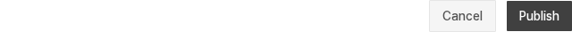
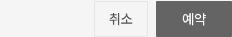
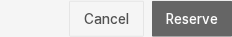
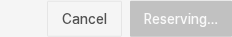

처리 중에는 버튼 안에서 안내
DS-036 확정·적용 · PF-Q1 A로 마감A를 적용했다. 기존 제출 상태에 따라 실행 버튼 안을 ‘저장 중… / 게시 중… / 예약 중…’로 짧게 바꾼다. 별도 설명이나 스피너는 추가하지 않는다.
승인 방향과 실제 적용
DS-005는 행동과 대상을 구체적으로 표현하는 문구 방향이다. DS-036은 그중 처리 중 안내의 위치를 버튼 안으로 확정했다. 모든 기본 문구를 일괄 변경한 것은 아니다.
| 사용처 | 현재 기본 문구 | 처리 중 |
|---|---|---|
| Form.Action 기본 | 저장하기 / Save | 저장 중… / Saving… |
| 공지·새 소식 작성 | 게시하기 / Publish | 게시 중… / Publishing… |
| 공지·새 소식 편집 | 변경사항 저장 / Save changes | 저장 중… / Saving… |
| 이미지 안내 관리 · 등록 / 편집 | 등록하기 / 저장하기 | 등록 중… / 저장 중… |
| 예약 추가 | 예약 / Reserve | 예약 중… / Reserving… |
Form.Action의 실행 문구와 취소·삭제 버튼에 영어 번역을 연결했다. 이미지 안내 관리는 현재 한국어 관리자 경로에서 사용한다. 공용 확인창의 ‘편집중인 내용이 사라집니다.’, ‘게시물을 삭제하시겠습니까?’, ‘취소 / 확인’은 그대로이며, 확인창까지 번역·문구 정리를 완료한 것은 아니다.
폭 기준: Form.Action은 해당 기본 실행 문구의 폭을 유지한다. 예약은 이전 ‘예약하기 / Reserve’ 폭을 최소 기준으로 남긴다. 처리 중 문구가 더 길면 버튼이 넓어진다. 크기가 항상 같다는 규칙은 아니다.
실제 적용 견본 · 대표6장면
아래는 새 프로덕션 빌드에서 촬영한 실제 앱 캡처다. before는 변경 전 앱이 아니라 이번 적용 후 실행 직전 상태를 뜻한다. 로컬 API 요청을 잠시 대기시켜 처리 중을 확인한 뒤 실제 요청을 이어 보냈고, 한·영 공지 작성·편집과 예약6장면에서 성공을 확인했다.
Notice edit · English
공지 작성 · 한국어
Notice create · English

예약 · 한국어

Reservation · English


확인한 범위와 남은 것
Form.Action을 사용하는27개 모듈은 모두 FormProvider 내부이며 handleSubmit에 연결됨을 소스로 확인했다. 실제 요청 검증은 위 대표6장면이다. 새 소식·이미지 관리와 나머지 폼의 모든 상태까지 실행 검증한 결과는 아니다.
최종 새 빌드에서도 대표6장면이 다시 통과했다. 기존 공지·새 소식 CRUD와 예약 생성·취소 E2E3개도 통과했다. 접근성 후속은 나머지 DS 완료 뒤에 진행한다. 이 기록은 일반 시각·처리 상태 적용 기록이다.
이전 PF-Q1 A/B HTML 비교 · 판단 마감
아래는 승인 전에 만든 HTML 재현이며 앱 캡처가 아니다. A가 선택됐고 B는 적용하지 않았다. 당시 ‘저장 / Save’ 등 견본의 기본 문구와 지금 적용한 문구는 다르므로 위 실제 적용표를 기준으로 본다. 아래 ‘앱 미적용’ 표기는 당시 견본 상태다.
공지 편집 · 한국어
기본 행동명 견본 · 앱 미적용
A 추천 · 버튼 안에서
B · 버튼 옆에서
저장 중…
Notice edit · English
기본 행동명 견본 · 앱 미적용
A 추천 · 버튼 안에서
B · 버튼 옆에서
Saving…
예약 · 한국어
기본 행동명 견본 · 앱 미적용
A 추천 · 버튼 안에서
B · 버튼 옆에서
예약 중…
Reservation · English
기본 행동명 견본 · 앱 미적용
A 추천 · 버튼 안에서
B · 버튼 옆에서
Reserving…